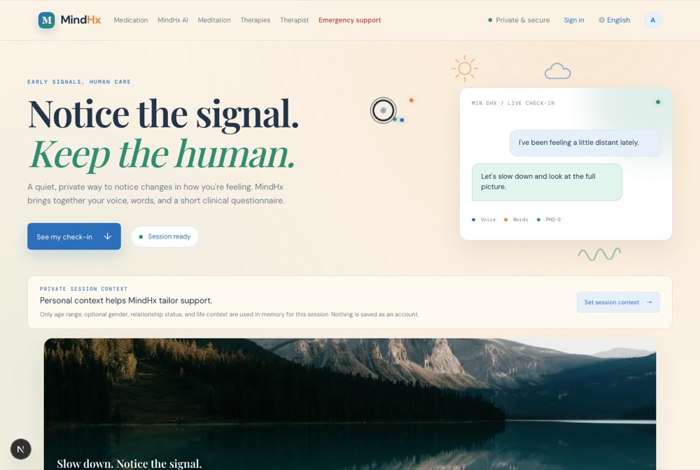
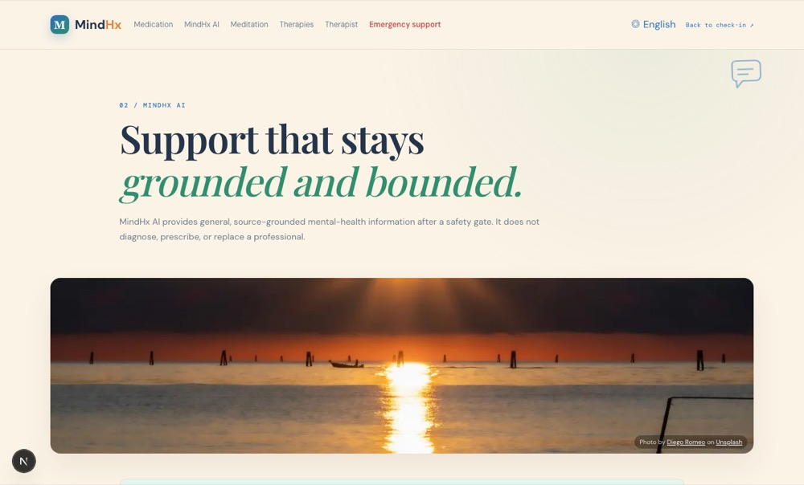
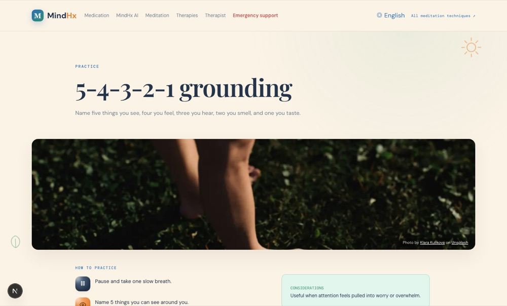
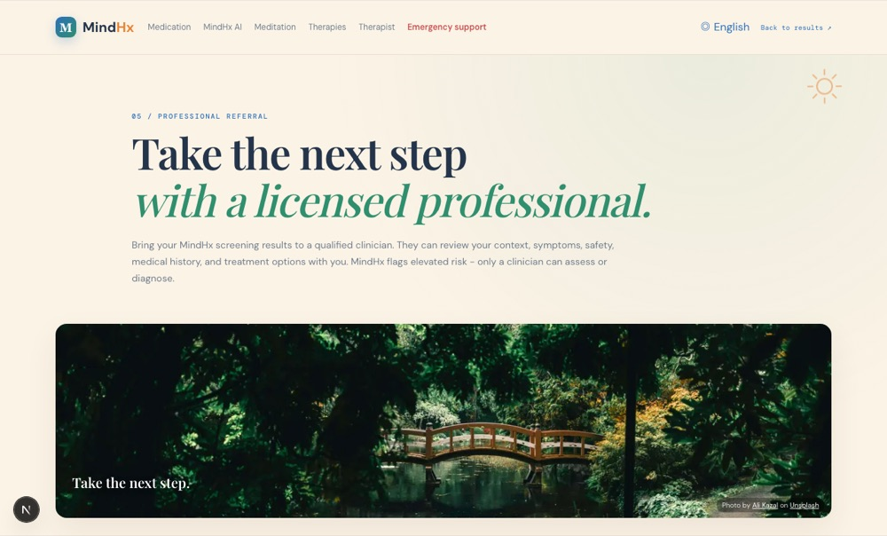
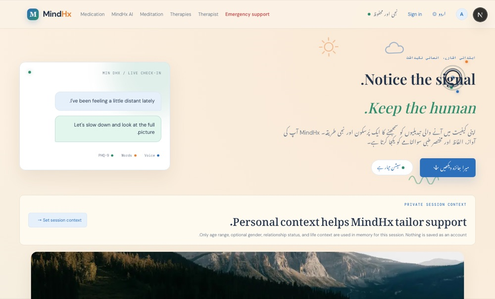
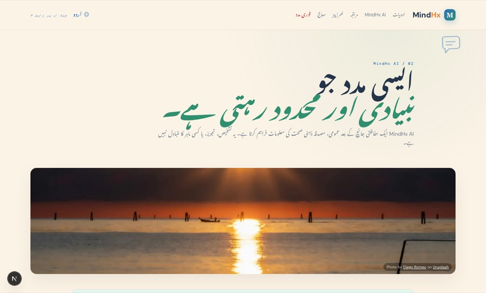
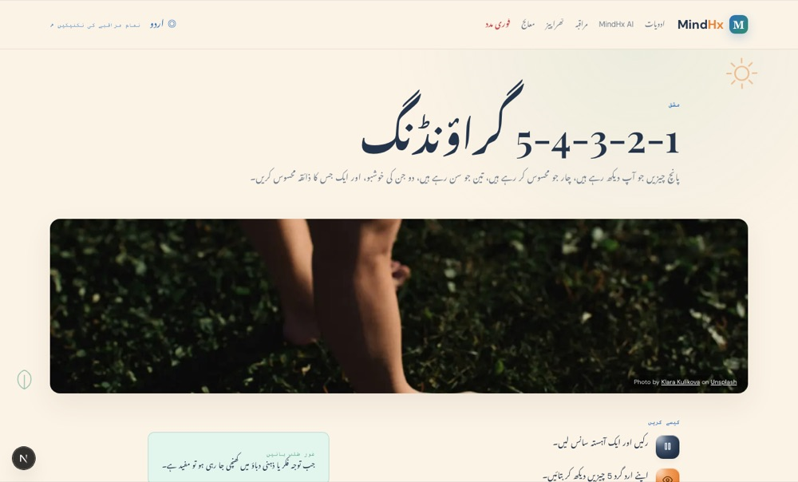
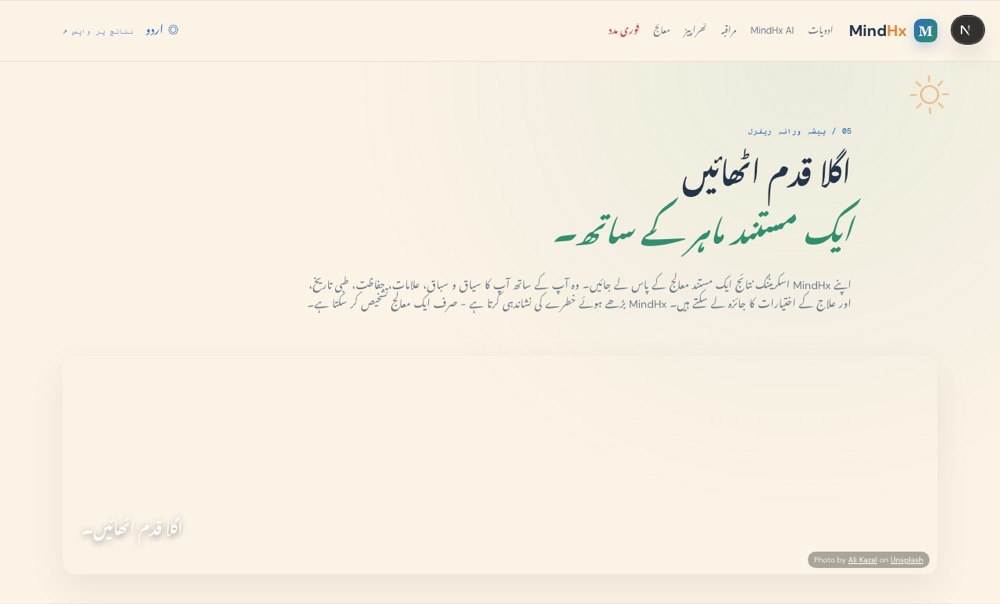
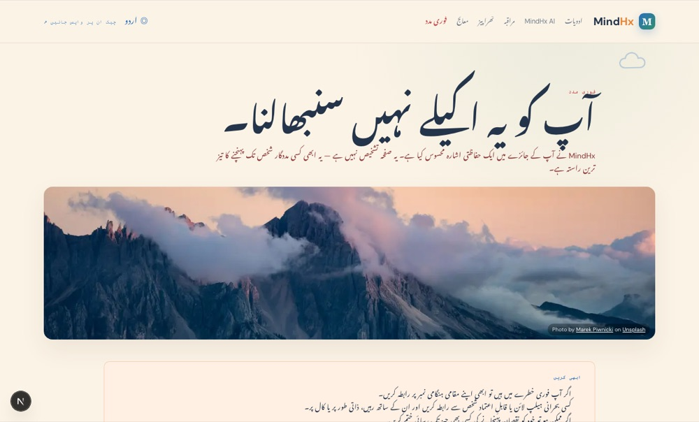

Notice the signal. Keep the human.
An early-detection mental-health triage aid that fuses voice, language, and validated clinical questionnaires into one explainable, weighted risk score — private by default, bilingual (English/Urdu) throughout, never a diagnosis.
01 / Objective
Depression, anxiety, and related conditions are frequently under-screened, especially where access to mental-health professionals is limited and stigma discourages self-report. MindHx's objective is a private, low-friction check-in that surfaces a risk signal a person can act on — without pretending to be a diagnosis, a replacement for a clinician, or a clinically calibrated instrument.
Voice, text, and three validated questionnaires are fused into one score, with a genuine per-signal attribution breakdown shown on the results page — not an opaque number.
Every page is worded in risk-tier language, never diagnostic language. PHQ-9 item 9 and self-harm language short-circuit everything else and go straight to Emergency Support.
The core check-in never requires signing in. Audio is processed and discarded. An optional account stores only score, band, and themes — never a transcript.
02 / The check-in

03 / Grounded support


04 / Professional referral

05 / Bilingual by design
Each page ships one bilingual copy object; a single header toggle switches language and text direction together. The screenshots on the following pages are the same live app, the same session, with only the language toggle clicked.
05 / اردو (Urdu, RTL)

05 / اردو (Urdu, RTL)


05 / اردو (Urdu, RTL)


06 / Roadmap
07 / Technical details
A Next.js 16 (App Router) frontend and a FastAPI backend. The screening/risk-assessment endpoints are fully stateless — every request self-contained, nothing persisted. An optional layer adds PostgreSQL-backed accounts purely for people who choose to save history.
07 / Technical details
| Endpoint | Purpose |
|---|---|
| POST /analyze-voice | Heuristic prosodic signal (pause ratio, loudness variability, speaking rate) — pluggable via VOICE_BIOMARKER_PROVIDER |
| POST /analyze-text | Sentiment + crisis-language detection — Qwen (DashScope) → OpenRouter → local heuristic fallback |
| POST /ai/chat | Bounded, source-grounded chat; safety-gated before any content is returned; server-side Urdu-script guard on generated replies |
| POST /risk-assess | Fuses all signals into the combined score, band, explanation, and routing decision |
| POST /score-phq9, /score-gad7, /score-k10 | Individual validated-questionnaire scoring |
| POST /auth/register, /auth/login | Optional account creation/sign-in — bcrypt + JWT |
| POST /checkins, GET /checkins | Save/list a signed-in user's check-in history (aggregate results only, never a transcript) |
| POST /synthesize | Urdu text-to-speech via Uplift AI |
08 / Support for users
PHQ-9 item 9 or detected self-harm language routes straight to Emergency Support — before any score is computed.
Answers general questions from a fixed, reviewed reference library; escalates rather than engages on any safety concern.
Medication reference, meditation techniques, and therapy approaches — framed as general education, never personalized treatment.
For signed-in users: a history of past scores/bands/themes to track change over time — never a diagnosis, never raw content.
09 / Impact & future implications